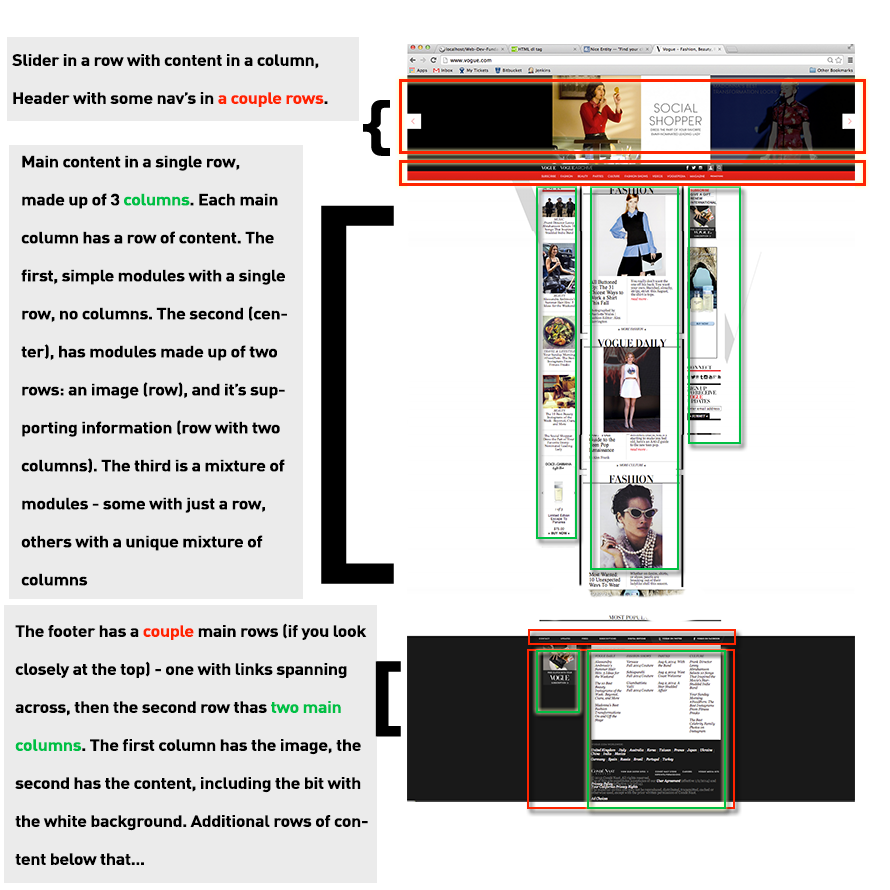

Containers
Containers are one of the most important concepts to grasp in frontend web development. The web, and it's design + framework is essentially made up of rows and columns of information. Modules, if you will. Back in the day, however, there were certain limitations to displaying the data, that is before the div tag's were established - so basically the entire web was made up of tables. And we all know what tabular data looks like.
Since then, the web has vastly improved with powerful CSS properties and refined HTML elements to allow for greater control over how website data is visualized/displayed, and how it's marked up in the document outline.
Take any website and you'll find rows and columns. Like... Vogue, for an example:
What's the Point? Why does it matter?
As soon as you can understand that website data is made up of rows, and then columns inside those rows to define more modules of data, you're good. The reason it matters is that eventually you will want to know how to collapse the data, so that it's more accessible to smaller devices.
A common practice before responsive web design was to give the entire page a content container, say div id="container" and then give that container a fixed width, like width: 1024px; margin: 0 auto, so that it's top and bottom margin is 0 and it's margin left and margin right fit in the center of the page, always at a width of 1024 pixels. An example of this is as follows:
Example 1:
This was generally not considered bad practice among many, as people were viewing web pages on a standard computer, with a standard width they could pretty much hit all the horses with 1024. At the time.
Now, however, we gotta deal with tablets, iPhones, androids, widths of all kinds - mega screens and humongo monitors, etc. Lots of widths. So therefore locking yourself into a set pixel ratio is not safe practice if you want to be a responsive web developer, compatible with lots of different viewports accessing any given URL.
Another Look at Example 1:
The Disadvantages of using IDs
IDs are costly. Classes are far more negotiable over time, and in general - it's bad to use a lot of IDs. In case anything needs to change down the road, it's harder to back track from IDs. So when you use an ID, ask yourself, am I targeting this element for any type of javascript/interactive goodness? If not, make it a class. You'll be glad you did, later.
The Disadvantages of a div id="container"
More often than not, you'll need to work with multiple backgrounds for a web page that need to span 100% of the width of any row of content, for any browser width. And by only using one container, with a fixed width set in pixels, you limit yourself to one background for the parent of that "contained" area.
View Live Example of Code above (Non Responsive Container)This practice has been replaced by treating each row of content its own container, and allowing the width to be relative to the width of the device looking at it. This example also uses HTML5 markup, which replaces major web concepts that have been founded over time. An example of this would look like this:
Notice the very limited use case of ID's here. If you give the body an ID - this is a good place to jump from on any given page, if you're working with any type of unique styles on a page. Also to keep in mind, if you're using a Content Managing System like WordPress - any CMS of this nature will give the body an ID - so even for projects not using a database, it is a good way to establish unique styles on any given page.
Benefits of treating each row of content as a container instead of only having one container
One of the biggest benefits is this process allows for different backgrounds for different rows of content, while also giving the content inside a container. It would require adding another container, a div is a great use case of this as a div has no extraordinary meaning on the document outline of a web page. We can wrap our content in a div and give it a container, while allowing the parent element to hold a background.
An example of this is as follows: